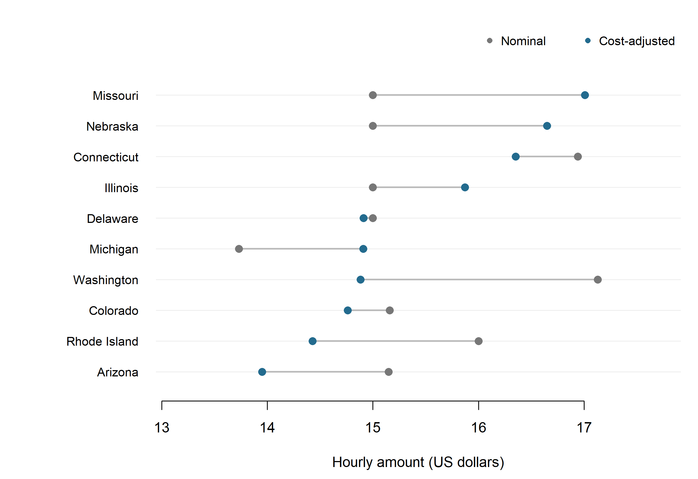
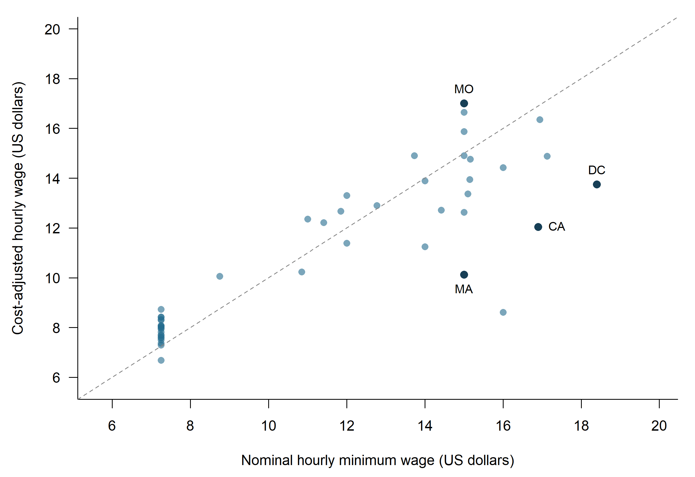

Where Does the Minimum Wage Go Furthest?
opinion
labor market
cost of living
A Higher Wage, but a Better Deal?
If two jobs offer different hourly wages, the higher offer initially looks better. But rent, groceries, and other expenses vary across places. For workers considering jobs near the wage floor, a useful question is: where does the minimum wage buy more after accounting for local prices? I combine two public websites to build a simple comparison. The goal is a practical screening tool for comparing locations, rather than a claim that one state is best for every worker.
Two Websites, One Comparison
Using R’s rvest package, I extracted the U.S. Department of Labor’s minimum-wage table, effective July 1, 2026, and MERIC’s cost-of-living table for Second Quarter 2026. MERIC averages indices from participating cities and metropolitan areas within each state. The national benchmark is 100. The wage schedule and price index cover different periods, so this comparison uses the published cost period as a benchmark rather than an exact contemporaneous price measure. Saved HTML snapshots preserve the observations used here.
I removed currency symbols, whitespace, and footnote markers, expanded state abbreviations, and matched all 50 states plus Washington, DC. For employment covered by the federal Fair Labor Standards Act, states with no higher floor receive the federal floor, not zero. States listing multiple general rates are retained separately rather than assigned an arbitrary single rate. This leaves 47 jurisdictions in the main comparison. Special local, industry, youth, and tipped-worker rates are outside its scope.
The calculation is:
\[ \text{Cost-adjusted hourly wage} = \frac{\text{Hourly minimum wage}} {\text{Cost-of-living index}/100} \]
An index of 120 reduces the nominal wage to its equivalent at the national price benchmark; an index of 90 increases it. This measure is a purchasing-power proxy, not a new legal wage, take-home pay, or a complete living-wage estimate.
Prices Change the Ranking
Missouri leads the main sample after adjustment at approximately $17.01 per hour. District of Columbia has the highest nominal floor in the sample, $18.40, equivalent to $13.75 after adjustment. California’s $16.90 floor becomes about $12.05. Missouri’s $15.00 becomes $17.01. Massachusetts has a $15.00 floor, equivalent to $10.13. The comparison shows why a wage’s dollar value alone is not enough to assess purchasing power.
The full-sample scatterplot shows how the adjustment works beyond a few examples. Points above the diagonal have cost indices below 100; those below it have higher indices. The descriptive pattern does not establish that wage laws cause prices, employment, or migration. It shows why comparing dollar amounts alone can miss an important part of a worker’s budget.

What Should a Job Seeker Do?
A worker comparing otherwise similar minimum-wage opportunities could use the adjusted ranking to shortlist locations, then check actual offers and local housing costs. Matching Missouri’s minimum-wage purchasing-power proxy in California would require approximately $23.86 per hour at these indices. This is a benchmark calculation, not a forecast or salary recommendation. The practical lesson is to compare the actual offered wage relative to relevant local costs, then consider hours, benefits, job availability, and moving expenses.
Important Limitations
State averages hide substantial differences between cities, and MERIC’s participating areas need not represent every worker’s spending. The proxy omits taxes, benefits, job-finding chances, and personal household needs. Wage coverage also varies, and the excluded multi-rate states may suit particular workers better than the main ranking suggests. These limitations make the results a starting point for research, not a complete relocation recommendation.
Top Ten: The Numbers
| State | Minimum wage | Cost index | Adjusted wage |
|---|---|---|---|
| Missouri | $15.00 | 88.2 | $17.01 |
| Nebraska | $15.00 | 90.1 | $16.65 |
| Connecticut | $16.94 | 103.6 | $16.35 |
| Illinois | $15.00 | 94.5 | $15.87 |
| Delaware | $15.00 | 100.6 | $14.91 |
| Michigan | $13.73 | 92.1 | $14.91 |
| Washington | $17.13 | 115.1 | $14.88 |
| Colorado | $15.16 | 102.7 | $14.76 |
| Rhode Island | $16.00 | 110.9 | $14.43 |
| Arizona | $15.15 | 108.6 | $13.95 |
Appendix: States with Multiple Rates
The states excluded from the single-rate comparison are: New Jersey, New York, Ohio, and Oregon. The endpoints below apply the same state cost index to the lowest and highest listed general wage rates. They are scenarios, not confidence intervals; geographic and employer-specific coverage still matter.
| State | Nominal range | Adjusted range |
|---|---|---|
| New Jersey | $15.23 to $15.92 | $12.78 to $13.36 |
| New York | $16.00 to $17.00 | $12.07 to $12.82 |
| Ohio | $7.25 to $11.00 | $7.80 to $11.83 |
| Oregon | $14.55 to $16.80 | $13.18 to $15.22 |
Sources and Code
- U.S. Department of Labor: Consolidated State Minimum Wage Update Table. Effective July 1, 2026. Retrieved 2026-09-20 (UTC).
- MERIC: Cost of Living Data Series. Second Quarter 2026; underlying survey by C2ER. Retrieved 2026-09-20 (UTC).
The accompanying project contains the scraping script in code/01_scrape.R, saved source webpages in data/raw/, cleaned observations in data/cleaned/, and generated results in results/. The README.md explains how to reproduce the analysis. Subsequent renders reuse saved HTML unless a data refresh is explicitly requested.
Missouri source-data notice
The data made available here has been modified for use from its original source, which is the State of Missouri. THE STATE OF MISSOURI MAKES NO REPRESENTATIONS OR WARRANTY AS TO THE COMPLETENESS, ACCURACY, TIMELINESS, OR CONTENT OF ANY DATA MADE AVAILABLE THROUGH THIS SITE. THE STATE OF MISSOURI EXPRESSLY DISCLAIMS ALL WARRANTIES, WHETHER EXPRESS OR IMPLIED, INCLUDING ANY IMPLIED WARRANTIES OF MERCHANTABILITY, OR FITNESS FOR A PARTICULAR PURPOSE.
The data is subject to change as modifications and updates are complete. It is understood that the information contained in the Web feed is being used at one’s own risk.